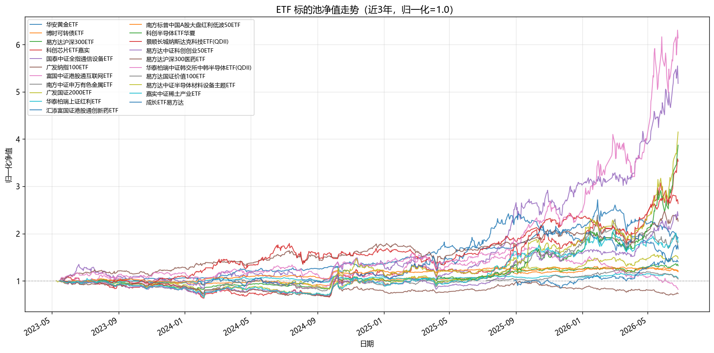
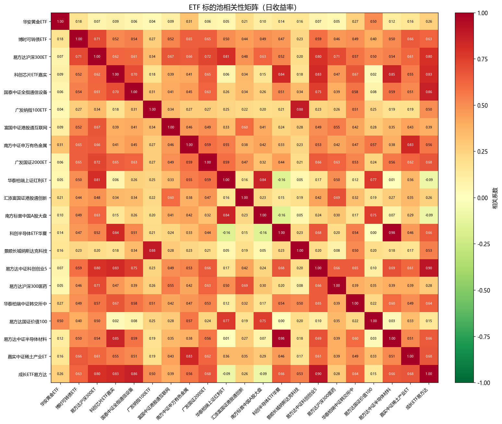
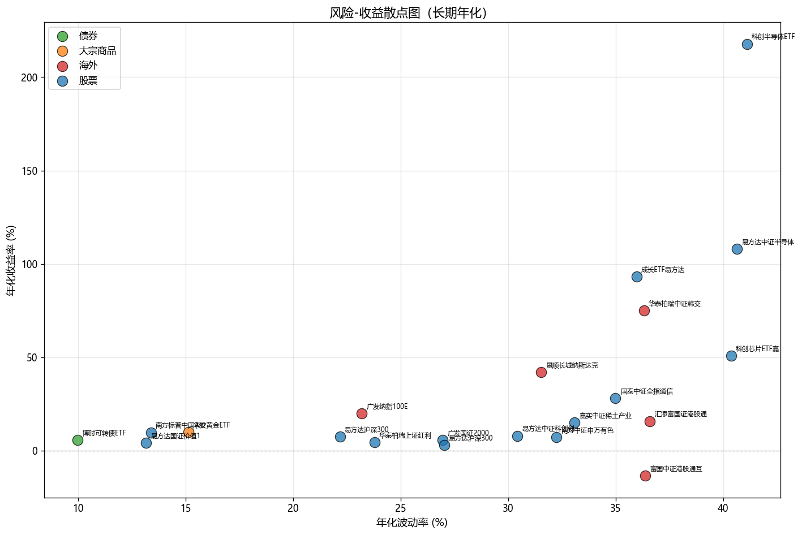
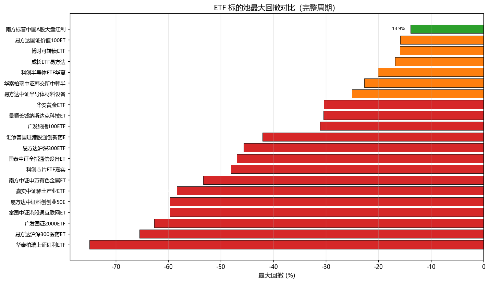
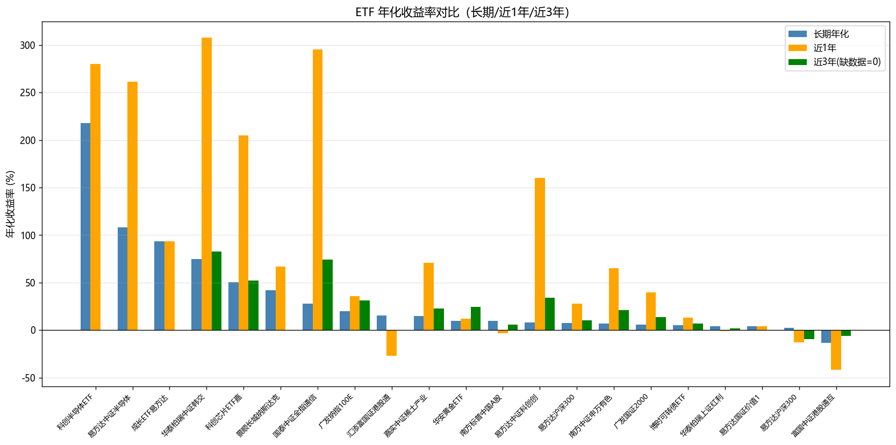
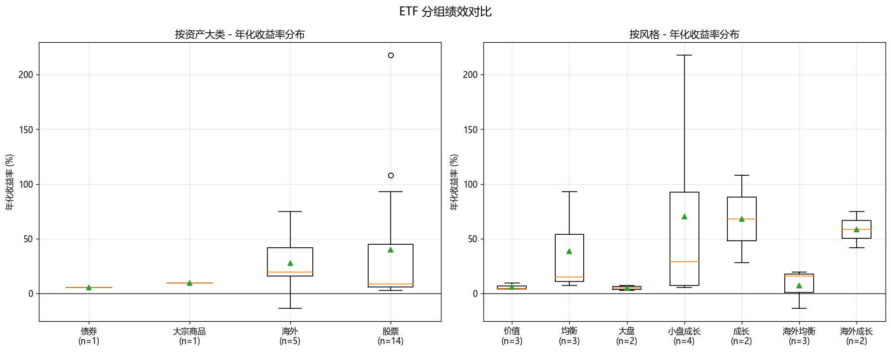

生成日期: 20260628
| asset_class | industry | style | 数量 | 长期年化均值 | 波动率均值 | Sharpe均值 | 最大回撤均值 |
|---|---|---|---|---|---|---|---|
| 债券 | - | - | 1 | 5.55% | 9.98% | 0.356 | -15.9% |
| 大宗商品 | - | - | 1 | 9.78% | 15.14% | 0.514 | -30.38% |
| 海外 | 海外互联网 | 海外均衡 | 1 | -13.55% | 36.37% | -0.428 | -59.66% |
| 海外 | 海外医药 | 海外均衡 | 1 | 15.77% | 36.6% | 0.376 | -42.09% |
| 海外 | 海外宽基 | 海外均衡 | 1 | 19.78% | 23.19% | 0.766 | -31.1% |
| 海外 | 海外科技 | 海外成长 | 2 | 58.56% | 33.92% | 1.641 | -26.57% |
| 股票 | 医药防御 | 大盘 | 1 | 2.78% | 27.02% | 0.029 | -65.51% |
| 股票 | 周期 | 均衡 | 2 | 11.09% | 32.67% | 0.277 | -55.87% |
| 股票 | 宽基 | 价值 | 3 | 6.09% | 16.78% | 0.280 | -34.9% |
| 股票 | 宽基 | 均衡 | 1 | 93.26% | 35.97% | 2.537 | -16.81% |
| 股票 | 宽基 | 大盘 | 1 | 7.36% | 22.18% | 0.242 | -45.68% |
| 股票 | 宽基 | 小盘成长 | 1 | 5.64% | 26.96% | 0.135 | -62.68% |
| 股票 | 科技成长 | 小盘成长 | 3 | 92.11% | 37.3% | 2.216 | -42.63% |
| 股票 | 科技成长 | 成长 | 2 | 67.96% | 37.82% | 1.674 | -36.01% |
| 代码 | 名称 | 资产大类 | 行业 | 风格 | 年数 | 长期年化 | 近1年年化 | 近3年年化 | 年化波动率 | Sharpe | 最大回撤 | Calmar | 日均成交额 | 数据起始 | 数据截止 | 回撤起点 | 回撤终点 |
|---|---|---|---|---|---|---|---|---|---|---|---|---|---|---|---|---|---|
| sh.518880 | 华安黄金ETF | 大宗商品 | - | - | 12.45 | 9.78% | 11.91% | 24.33% | 15.14% | 0.514 | -30.38% | 0.322 | 427286万 | 2013-07-29 | 2026-06-26 | 2026-01-29 | 2026-06-25 |
| sh.511380 | 博时可转债ETF | 债券 | - | - | 5.98 | 5.55% | 13.19% | 6.9% | 9.98% | 0.356 | -15.9% | 0.349 | 1083728万 | 2020-04-07 | 2026-06-26 | 2022-02-10 | 2024-09-18 |
| sh.510310 | 易方达沪深300ETF | 股票 | 宽基 | 大盘 | 12.77 | 7.36% | 27.97% | 10.28% | 22.18% | 0.242 | -45.68% | 0.161 | 217895万 | 2013-03-25 | 2026-06-26 | 2015-06-12 | 2016-01-28 |
| sh.588200 | 科创芯片ETF嘉实 | 股票 | 科技成长 | 小盘成长 | 3.52 | 50.64% | 204.82% | 52.51% | 40.37% | 1.205 | -48.1% | 1.053 | 468027万 | 2022-10-26 | 2026-06-26 | 2023-04-20 | 2024-02-05 |
| sh.515880 | 国泰中证全指通信设备ETF | 股票 | 科技成长 | 成长 | 6.53 | 27.98% | 295.13% | 74.21% | 34.99% | 0.743 | -46.97% | 0.596 | 371351万 | 2019-09-06 | 2026-06-26 | 2020-02-25 | 2022-04-26 |
| sz.159941 | 广发纳指100ETF | 海外 | 海外宽基 | 海外均衡 | 10.56 | 19.78% | 36.13% | 31.23% | 23.19% | 0.766 | -31.1% | 0.636 | 178741万 | 2015-07-13 | 2026-06-26 | 2020-02-13 | 2020-03-18 |
| sz.159792 | 富国中证港股通互联网ETF | 海外 | 海外互联网 | 海外均衡 | 4.55 | -13.55% | -41.67% | -5.73% | 36.37% | -0.428 | -59.66% | -0.227 | 206930万 | 2021-09-28 | 2026-06-26 | 2021-10-22 | 2024-01-31 |
| sh.512400 | 南方中证申万有色金属ETF | 股票 | 周期 | 均衡 | 8.48 | 7.18% | 65.39% | 20.89% | 32.24% | 0.161 | -53.35% | 0.134 | 122770万 | 2017-09-01 | 2026-06-26 | 2021-09-13 | 2024-02-05 |
| sz.159907 | 广发国证2000ETF | 股票 | 宽基 | 小盘成长 | 14.29 | 5.64% | 39.81% | 13.78% | 26.96% | 0.135 | -62.68% | 0.090 | 1023万 | 2011-08-10 | 2026-06-26 | 2015-06-12 | 2019-01-03 |
| sh.510880 | 华泰柏瑞上证红利ETF | 股票 | 宽基 | 价值 | 18.73 | 4.47% | -0.94% | 1.89% | 23.79% | 0.104 | -75.0% | 0.060 | 56670万 | 2007-01-18 | 2026-06-26 | 2007-10-15 | 2008-11-04 |
| sz.159570 | 汇添富国证港股通创新药ETF | 海外 | 海外医药 | 海外均衡 | 2.32 | 15.77% | -26.86% | nan% | 36.6% | 0.376 | -42.09% | 0.375 | 255611万 | 2024-01-22 | 2026-06-26 | 2025-08-18 | 2026-06-17 |
| sh.515450 | 南方标普中国A股大盘红利低波50ETF | 股票 | 宽基 | 价值 | 6.09 | 9.73% | -3.31% | 6.18% | 13.39% | 0.577 | -13.87% | 0.702 | 20639万 | 2020-02-26 | 2026-06-26 | 2022-02-11 | 2022-10-31 |
| sh.588170 | 科创半导体ETF华夏 | 股票 | 科技成长 | 小盘成长 | 1.17 | 217.82% | 280.21% | nan% | 41.1% | 5.251 | -20.13% | 10.823 | 193040万 | 2025-04-08 | 2026-06-26 | 2026-01-16 | 2026-03-23 |
| sz.159509 | 景顺长城纳斯达克科技ETF(QDII) | 海外 | 海外科技 | 海外成长 | 2.76 | 42.01% | 66.88% | nan% | 31.53% | 1.269 | -30.47% | 1.379 | 105980万 | 2023-08-08 | 2026-06-26 | 2024-07-11 | 2025-04-07 |
| sz.159781 | 易方达中证科创创业50ETF | 股票 | 科技成长 | 小盘成长 | 4.78 | 7.87% | 159.93% | 34.14% | 30.43% | 0.193 | -59.66% | 0.132 | 46278万 | 2021-07-05 | 2026-06-26 | 2021-07-21 | 2024-09-23 |
| sh.512010 | 易方达沪深300医药ETF | 股票 | 医药防御 | 大盘 | 12.21 | 2.78% | -12.53% | -9.3% | 27.02% | 0.029 | -65.51% | 0.042 | 51149万 | 2013-10-28 | 2026-06-26 | 2021-02-10 | 2024-09-23 |
| sh.513310 | 华泰柏瑞中证韩交所中韩半导体ETF(QDII) | 海外 | 海外科技 | 海外成长 | 3.36 | 75.12% | 307.43% | 82.93% | 36.31% | 2.014 | -22.68% | 3.312 | 881543万 | 2022-12-22 | 2026-06-26 | 2024-07-16 | 2024-09-20 |
| sz.159263 | 易方达国证价值100ETF | 股票 | 宽基 | 价值 | 0.93 | 4.08% | 4.08% | nan% | 13.17% | 0.158 | -15.83% | 0.258 | 23453万 | 2025-07-08 | 2026-06-26 | 2026-03-12 | 2026-06-26 |
| sz.159558 | 易方达中证半导体材料设备主题ETF | 股票 | 科技成长 | 成长 | 1.94 | 107.93% | 261.55% | nan% | 40.64% | 2.606 | -25.05% | 4.308 | 71890万 | 2024-06-18 | 2026-06-26 | 2024-11-11 | 2025-01-03 |
| sh.516150 | 嘉实中证稀土产业ETF | 股票 | 周期 | 均衡 | 5.07 | 15.0% | 70.93% | 22.88% | 33.09% | 0.393 | -58.39% | 0.257 | 34119万 | 2021-03-17 | 2026-06-26 | 2021-09-13 | 2024-02-05 |
| sz.159259 | 成长ETF易方达 | 股票 | 宽基 | 均衡 | 0.78 | 93.26% | 93.26% | nan% | 35.97% | 2.537 | -16.81% | 5.548 | 36101万 | 2025-08-28 | 2026-06-26 | 2025-10-29 | 2025-11-21 |

说明：归一化到 1.0 便于横向比较，仅展示近3年以避免新 ETF 被老 ETF 拉长 x 轴。

说明：基于日收益率计算 Pearson 相关系数。颜色越红表示相关性越高，可用于识别同质化标的。

说明：横轴为年化波动率（风险），纵轴为年化收益率。左上角为"高收益低风险"优质标的，右下角为"低收益高风险"劣质标的。

说明：完整周期最大回撤。红色（<-30%）为高风险，橙色（-15%~-30%）为中风险，绿色（>-15%）为低风险。

说明：蓝色=长期年化，橙色=近1年，绿色=近3年。注意新 ETF 无近3年数据（显示为0）。

说明：左图按资产大类分组，右图按风格分组，展示各组年化收益率分布（箱线图）。
基于量化知识库的 ETF 轮动策略分类方法，初步分组建议如下：
| code | name | asset_class | industry | style | annual_return | annual_volatility | sharpe | max_drawdown |
|---|---|---|---|---|---|---|---|---|
| sh.511380 | 博时可转债ETF | 债券 | - | - | 0.055516 | 0.099834 | 0.355749 | -0.158962 |
| sh.518880 | 华安黄金ETF | 大宗商品 | - | - | 0.097804 | 0.151371 | 0.513993 | -0.303847 |
| sz.159792 | 富国中证港股通互联网ETF | 海外 | 海外互联网 | 海外均衡 | -0.135537 | 0.363653 | -0.427706 | -0.596623 |
| sz.159570 | 汇添富国证港股通创新药ETF | 海外 | 海外医药 | 海外均衡 | 0.157669 | 0.365955 | 0.376190 | -0.420875 |
| sz.159941 | 广发纳指100ETF | 海外 | 海外宽基 | 海外均衡 | 0.197764 | 0.231917 | 0.766496 | -0.310973 |
| sh.513310 | 华泰柏瑞中证韩交所中韩半导体ETF(QDII) | 海外 | 海外科技 | 海外成长 | 0.751237 | 0.363073 | 2.014024 | -0.226790 |
| sz.159509 | 景顺长城纳斯达克科技ETF(QDII) | 海外 | 海外科技 | 海外成长 | 0.420060 | 0.315305 | 1.268800 | -0.304692 |
| sh.512010 | 易方达沪深300医药ETF | 股票 | 医药防御 | 大盘 | 0.027776 | 0.270195 | 0.028781 | -0.655056 |
| sh.516150 | 嘉实中证稀土产业ETF | 股票 | 周期 | 均衡 | 0.149964 | 0.330935 | 0.392719 | -0.583912 |
| sh.512400 | 南方中证申万有色金属ETF | 股票 | 周期 | 均衡 | 0.071752 | 0.322425 | 0.160509 | -0.533528 |
| sh.515450 | 南方标普中国A股大盘红利低波50ETF | 股票 | 宽基 | 价值 | 0.097308 | 0.133922 | 0.577258 | -0.138702 |
| sh.510880 | 华泰柏瑞上证红利ETF | 股票 | 宽基 | 价值 | 0.044691 | 0.237883 | 0.103794 | -0.750000 |
| sz.159263 | 易方达国证价值100ETF | 股票 | 宽基 | 价值 | 0.040819 | 0.131665 | 0.158119 | -0.158320 |
| sz.159259 | 成长ETF易方达 | 股票 | 宽基 | 均衡 | 0.932564 | 0.359668 | 2.537242 | -0.168075 |
| sh.510310 | 易方达沪深300ETF | 股票 | 宽基 | 大盘 | 0.073601 | 0.221799 | 0.241665 | -0.456784 |
| sz.159907 | 广发国证2000ETF | 股票 | 宽基 | 小盘成长 | 0.056449 | 0.269603 | 0.135193 | -0.626783 |
| sh.588170 | 科创半导体ETF华夏 | 股票 | 科技成长 | 小盘成长 | 2.178170 | 0.410995 | 5.251080 | -0.201251 |
| sh.588200 | 科创芯片ETF嘉实 | 股票 | 科技成长 | 小盘成长 | 0.506432 | 0.403731 | 1.204841 | -0.480955 |
| sz.159781 | 易方达中证科创创业50ETF | 股票 | 科技成长 | 小盘成长 | 0.078747 | 0.304319 | 0.193043 | -0.596579 |
| sz.159558 | 易方达中证半导体材料设备主题ETF | 股票 | 科技成长 | 成长 | 1.079291 | 0.406438 | 2.606279 | -0.250509 |
| sh.515880 | 国泰中证全指通信设备ETF | 股票 | 科技成长 | 成长 | 0.279829 | 0.349880 | 0.742623 | -0.469741 |